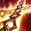

사일러스 (Sylas)
마법사/암살자 / 난이도: 상
스킬
-
패시브 페트리사이트 폭발
스킬 사용 후 사일러스가 페트리사이트 폭발을 1회 충전합니다. (최대 충전량 3회) 다음 기본 공격 시 충전량을 하나 소모하여 사슬을 휘두르며 적중한 적에게 마법 피해를 입히고 대상 주변의 모든 적에게 감소한 마법 피해를 입힙니다. 충전이 하나라도 되어 있으면 사일러스의 공격 속도가 125% 증가합니다.
-

Q 사슬 후려치기사일러스가 사슬을 후려쳐 마법 피해를 입히고 1.5초 동안 둔화시킵니다. 사슬이 교차하는 지점은 폭발해 마법 피해를 추가로 입힙니다.
-
W 국왕시해자
사일러스가 마법의 힘으로 적에게 돌진해 마법 피해를 입힙니다. 챔피언에게 사용하면 사일러스가 잃은 체력에 비례해 체력을 회복합니다. (체력이 40% 이하일 때 최대 회복량 적용)
-
E 도주 / 억압
사일러스가 재빨리 돌진한 후 3.5초 동안 재사용을 준비합니다. 재사용 시: 사일러스가 사슬을 던져 적에게 적중하면 사슬을 끌어당겨 적 방향으로 이동하며 마법 피해를 입히고 0.5초 동안 에어본공중으로 띄워 올립니다.
-
R 강탈
사일러스가 적 챔피언의 궁극기를 강탈해 적과 똑같이 사용합니다. 효과는 사일러스의 궁극기 레벨과 능력치에 비례합니다. 적의 궁극기를 강탈하면 해당 궁극기 재사용 대기시간의 200%(사일러스의 스킬 가속 적용)만큼 재사용 대기시간이 적용되어 사일러스가 그동안 해당 적의 궁극기를 다시 강탈할 수 없습니다. (최소 40초)
배경 스토리 요약
데마시아의 빈민 구역, 드레그본에서 자란 사일러스는 위대한 도시의 어두운 면을 상징한다. 숨겨진 마력을 탐지하는 능력을 지닌 사일러스는 어렸을 때 마력척결관들의 눈에 띄지만, 결국 마력척결관을 상대로 마력을 사용하면서 감옥에 갇힌다. 감옥에서 탈출한 사일러스는 이제 불굴의 혁명가로 살며 한때 자신이 섬겼던 왕국을 파괴하기 위해 주변 사람들의 마법을 이용한다. 추방자들로 이루어진 사일러스의 마법사 군단은 날로 그 기세를 더해가는 듯 보인다.